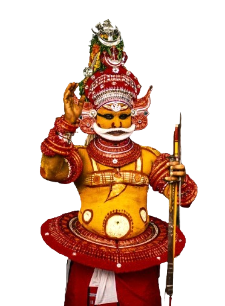

കാര്യപരിപാടികൾ
2025 മാർച്ച് 30 ഞായർ
വൈകു: 4 ന്
കലവറ നിറയ്ക്കൽ
കണ്ടങ്കാളി ശ്രീ സോമേശ്വേരീ ക്ഷേത്രത്തിൽ നിന്നും പുറപ്പെടുന്നു

പയ്യന്നൂർ മാവിച്ചേരി
കുണ്ടോറ തറവാട്
ശ്രീ വല്ലാർകുളങ്ങര ഭഗവതി ദേവസ്ഥാനം
2025 മാർച്ച് 30 31 ഞായർ, തിങ്കൾ (1200 മീനം 16,17)
ഭക്തജനങ്ങളെ,
പയ്യന്നൂരിലെയും പരിസരപ്രദേശങ്ങളിലെയും തറവാടുകളിലും ക്ഷേത്രങ്ങളിലും ദൈവങ്ങളെ തെയ്യക്കോല രൂപത്തിൽ ആവാഹിച്ച് ജീവൻ നൽകി ഭക്തരെ ആശീർവദിക്കുകയും,
അവർക്ക് സായുജ്യം നൽകുകയും ചെയ്തു വരുന്ന തെയ്യക്കോലക്കാരുടെ തറവാടായ കുണ്ടോറ ശ്രീ വല്ലാർ കുളങ്ങര ഭഗവതി ദേവസ്ഥാനം കളിയാട്ട മഹോത്സവം ചുവടെ ചേർത്ത പ്രകാരം നടത്തുവാൻ തീരുമാനിച്ചിരിക്കുന്നു.
കളിയാട്ട മഹേഹാത്സവം വൻ വിജയമാക്കുവാൻ മുഴുവൻ ഭക്തജനങ്ങളുടെയും നാട്ടുകാരുടെയും സഹായ സഹകരണങ്ങൾ അഭ്യർത്ഥിക്കുന്നു.
എന്ന്,
ആഘോഷക്കമ്മിറ്റി
കണ്ടങ്കാളി ശ്രീ സോമേശ്വേരീ ക്ഷേത്രത്തിൽ നിന്നും പുറപ്പെടുന്നു